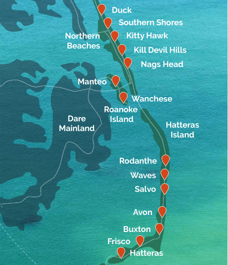
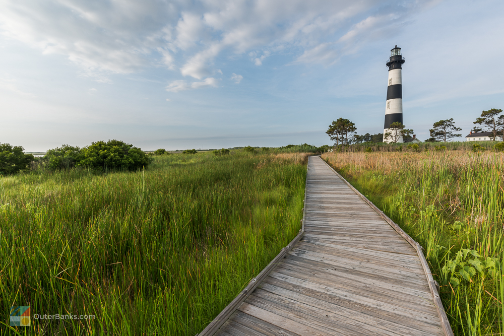
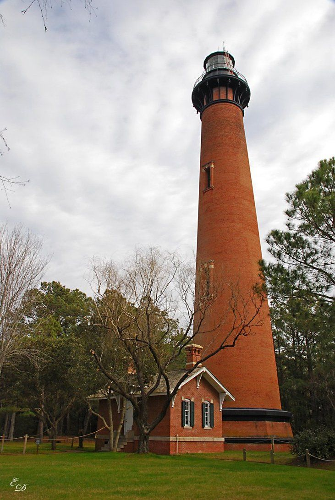
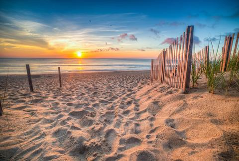

Take a trip to the Outer Banks!
The Outer Banks is a 200 mile long stretch of barrier islands that make up the majority of the North Carolina coastline. During the summer season, which takes place from Memorial Day in May to Labor Day in September, the region is a popular tourist destination, with thousands of visitors flocking to the OBX, as the Outer Banks is coined, for its expansive beaches and parks. Additionally, visitors frequent for the several historic lighthouses and shipwrecks that dominate the coastline. Continue to read on for more information about the Outer Banks!

▼ ▼ ▼
Lighthouses



Up and down the Outer Banks, there are a multitude of lighthouses, which were once used to serve as a navigational aid to ships at sea. One lighthouse, Ocracoke, is the US's second oldest lighthouse and still in operation, and Cape Hatteras Lighthouse is the tallest lighthouse in the US. Here is a list of lighthouses from north to south, and clicking on the names will link to visitor information.
Wright Brothers National Memorial
The Wright Brothers National Memorial is a museum and memorial located in Kill Devil Hills. It commemorates the first successful airplane flight by the Wright brothers in 1903. The memorial is a successful tourist destination, with over 400,000 visitors each year.
first
flight
orville
wilbur
wright
kittyhawk
outerbanks
The beaches

Perhaps the most popular attraction the Outer Banks offers is its beaches. They span the entire coastline, bordered by dunes towards land and the Atlantic Ocean. All of the beaches are public and free of businesses and boardwalks. There are a great amount of rental houses and hotels that have been built near the beach in recent years, making both getting to the beach and being able to spend it with family a breeze.